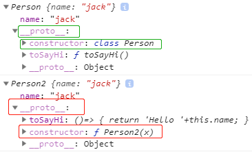
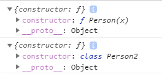
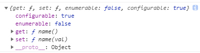
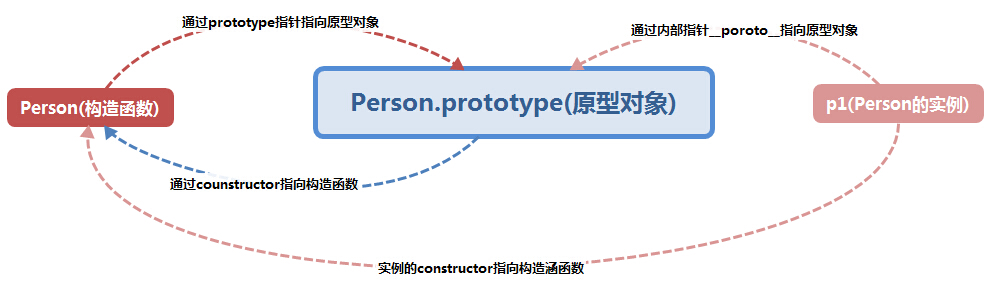

ES6系列-5-Class与Module
本篇介绍ES6的 Class（类）与 ES6的模块化方案
Class （类）
JavaScript 语言中，生成实例对象的传统方法是通过构造函数实现的，但这种写法跟传统面向对象的语法（c++/java）等差异很大，ES6 提供了更接近传统语言的写法，引入了 Class（类）这个概念，作为对象的模板。通过class关键字，可以定义类。
概述
通过class关键字，可以定义类，这样更优雅，易于理解。
class Person{
constructor(x) {
this.name = x;
}
toSayHi() {
return 'Hello '+this.name;
}
}
const p1=new Person("jack");
p1.name; //"jack"
p1.toSayHi();//"Hello jack"
console.log(Object.keys(Person.prototype));//[] toSayHi方法是Person类内部定义的方法，它是不可枚举的
上面代码定义了一个“类”，可以看到里面有一个constructor方法，这就是构造方法，this关键字则代表实例对象。注意：定义“类”的方法不需要function这个关键字，直接把函数定义放进去了就可以了。另外，方法之间不需要逗号分隔，加了会报错。
上述代码等同于：
function Person(x){
this.name = x;
}
Person.prototype.toSayHi=function(){
return 'Hello '+this.name;
}
const p1=new Person("jack");
p1.name; //"jack"
p1.toSayHi();//"Hello jack"
console.log(Object.keys(Person.prototype));//["toSayHi"] ES5写法下，toSayHi方法是可以枚举的，
//注意ES6和ES5下此处的行为不一致
以上两种模式都满足：
//等式1
p1.constructor===Person;//true
//等式2
Person===Person.prototype.constructor;//true
//等式3
p1.constructor===Person.prototype.constructor;//true
说明：
- 每个实例对象都有一个 constructor（构造函数）属性，该属性指向创建它的构造函数，也就是说constructor始终指向创建当前对象的构造函数，所以等式1成立；
- 无论什么时候，只要创建了一个新函数，就会根据一组特定的规则为该函数创建一个 prototype属性，这个属性指向函数的原型对象。在默认情况下，所有原型对象都会自动获得一个 constructor（构造函数）属性，这个属性包含一个指向 prototype 属性所在函数的指针，即指向函数本身。所以等式2成立（参见下图）；
 - 将等式1和等式2合并即可得到等式3成立。
另外：类的内部所有定义的方法，都是不可枚举的（demo代码中已经标明）。
可以看到：ES6 的class可以看作只是一个语法糖，它的绝大部分功能，ES5 都可以做到，新的class写法只是让对象原型的写法更加清晰、更像面向对象编程的语法而已。
由于类的方法都定义在prototype对象上面，所以类的新方法可以添加在prototype对象上面。Object.assign方法可以很方便地一次向类添加多个方法：
class Person{
constructor(x) {
this.name = x;
}
}
Object.assign(Person.prototype,{
toSayHi() {
return 'Hello '+this.name;
},
toValue(){
return 'value ' +this.name
}
})
const p1=new Person("jack");
console.log(p1.toSayHi()); //"Hello jack"
console.log(p1.toValue()); //"value jack"
constructor 方法
constructor方法是类的默认方法，通过new命令生成对象实例时，自动调用该方法。一个类必须有constructor方法，如果没有显式定义，一个空的constructor方法会被默认添加:
function Person(x){
this.name = x;
}
console.log(Person.prototype)
class Person2{
}
console.log(Person2.prototype)

类的实例
同ES5一致，生成类的实例的写法，也是使用new命令。实例的属性除非显式定义在其本身（即定义在this对象上），否则都是定义在原型上（即定义在class上）
//定义类
class Point {
constructor(x, y) {
this.x = x;
this.y = y;
}
toString() {
return '(' + this.x + ', ' + this.y + ')';
}
}
var point = new Point(2, 3);
point.toString() // (2, 3)
point.hasOwnProperty('x') // true
point.hasOwnProperty('y') // true
point.hasOwnProperty('toString') // false
point.__proto__.hasOwnProperty('toString') // true
取值函数（getter）和存值函数（setter）
与 ES5 一样，在“类”的内部可以使用get和set关键字，对某个属性设置存值函数和取值函数，拦截该属性的存取行为。
class Person{
constructor(){
}
get name(){
return "getter"
}
set name(val){
console.log("setter")
}
}
const p = new Person()
console.log(p.name) ;// getter
p.name="x";// setter
console.log(Object.getOwnPropertyDescriptor(Person.prototype, 'name'))
存值函数和取值函数是设置在属性的 Descriptor 对象上的:

属性表达式
类的属性名，可以采用表达式。
let methodName = 'getArea';
class Square {
constructor(length) {
// ...
}
[methodName]() {
// ...
}
}
Class 表达式
const MyPerson = class Person {
getClassName() {
return Person.name;
}
};
const p =new MyPerson();
console.log(p.getClassName());//"Person"
const p1 =new Person(); // 报错 Uncaught ReferenceError: Person is not defined
类的名字是Person，但是Person只在 Class 的内部可用，指代当前类。在 Class 外部，这个类只能用MyPerson引用;
如果类内部用不到 Person ，完全可以省略不写，也可以采用 Class 表达式，可以写出立即执行的 Class：
const p = new class {
constructor(name) {
this.name = name;
}
getClassName() {
console.log(this.name)
}
}('张三');
p.getClassName();//"张三"
注意点
不存在提升
new Person(); class Person{}; //会报错 new Person(); function Person(){} //运行正常name属性：
name属性总是返回紧跟在class关键字后面的类名：这点同ES5一样。this 的指向
类的方法内部如果含有this，它默认指向类的实例。但如果单独使用该方法，那么很可能报错。推荐使用箭头函数：class Logger { constructor() { this.printName = (name = 'there') => { this.print(`Hello ${name}`); }; } // ... }
静态方法
类相当于实例的原型，所有在类中定义的方法，都会被实例继承。如果在一个方法前，加上static关键字，就表示该方法不会被实例继承，而是直接通过类来调用，这就称为“静态方法”。
class Person {
static bar() {
this.baz();
}
static baz() {
console.log('hello');
}
baz() {
console.log('world');
}
}
const p = new Person();
Person.baz() // 'hello'
p.baz() //'world'
Person.bar(); //hello 静态方法的this指的是类，而不是实例！！！
p.bar() //报错 p.bar is not a function
可以看到：静态方法中的this关键字，指的是类，而不是实例。
父类的静态方法，可以被子类继承。
class Foo {
static classMethod() {
return 'hello';
}
}
class Bar extends Foo {
}
Bar.classMethod() // 'hello'
实例属性的新写法
实例属性除了定义在constructor()方法里面的this上面，也可以定义在类的最顶层。这种新写法的好处是，所有实例对象自身的属性都定义在类的头部，看上去比较整齐，一眼就能看出这个类有哪些实例属性：
class foo {
bar = 'hello';
baz = 'world';
constructor() {
// ...
}
}
ps：上述写法目前在chrome中直接运行会报错。2019-02-24标注
静态属性
静态属性指的是 Class 本身的属性，即Class.propName，而不是定义在实例对象（this）上的属性。
class Foo {
}
Foo.prop = 1;
Foo.prop // 1
目前，只有这种写法可行，因为 ES6 明确规定，Class 内部只有静态方法，没有静态属性。
现在有一个提案提供了类的静态属性，写法是在实例属性法的前面，加上static关键字(目前chrome未实现)：
class Foo {
static prop=1
}
私有方法和私有属性
私有方法和私有属性，是只能在类的内部访问的方法和属性，外部不能访问。这是常见需求，有利于代码的封装，但 ES6 不提供，只能通过变通方法模拟实现。
具体实现方法可参见，目前还没有特别完美的方案私有属性和方法，新版的提案（前面加#号）暂时还未实现。
new.target 属性
new是从构造函数生成实例对象的命令。ES6 为new命令引入了一个new.target属性，该属性一般用在构造函数之中，返回new命令作用于的那个构造函数。如果构造函数不是通过new命令或Reflect.construct()调用的，new.target会返回undefined，因此这个属性可以用来确定构造函数是怎么调用的。
function Person(name) {
if (new.target !== undefined) {
this.name = name;
} else {
throw new Error('必须使用 new 命令生成实例');
}
}
// 另一种写法
function Person(name) {
if (new.target === Person) {
this.name = name;
} else {
throw new Error('必须使用 new 命令生成实例');
}
}
var person = new Person('张三'); // 正确
var notAPerson = Person.call(person, '张三'); // 报错
类的继承
extends
Class 可以通过extends关键字实现继承，这比 ES5 的通过修改原型链实现继承，要清晰和方便很多：
class Animal{
constructor(){
this.food="meat"
}
sayHi(){
console.log("I am animal, I eat "+ this.food)
}
food(){
return this.food
}
}
class Cat extends Animal{
constructor(){
super(); //子类必须在constructor方法中调用super方法，否则新建实例时会报错
this.color="black";
}
sayHi(){
console.log("I am cat, I eat "+ super.food() + ", my color is "+this.color )
console.log("I am cat, I eat "+ this.food + ", my color is "+this.color );
//继承了父级的food属性
// 子类方法中调用父类方法，必须通过super关键字，super.food()
}
}
const cat=new Cat();
const ani= new Animal();
ani.sayHi(); //I am animal, I eat meat
cat.sayHi(); //I am cat, I eat meat, my color is black I am cat, I eat meat, my color is black
注意：
子类方法中super关键字的调用：子类必须在constructor方法中调用super方法，否则新建实例时会报错。子类方法中如果需要调用父级的方法，需通过super关键字。
ES6继承机制同ES5完全不同：先将父类实例对象的属性和方法，加到this上面（所以必须先调用super方法），然后再用子类的构造函数修改this。而ES5 的继承，实质是先创造子类的实例对象this，然后再将父类的方法添加到this上面（
Parent.apply(this)）不管有没有显式定义，任何一个子类都有constructor方法（会被默认添加）。
class ColorPoint extends Point { } // 等同于 class ColorPoint extends Point { constructor(...args) { super(...args); } }通过子类创建的实例，同时是Cat和Animal两个类的实例，这与 ES5 的行为完全一致。
const cat=new Cat(); cat instanceof Cat;//true cat instanceof Animal; //true父类的静态方法，也会被子类继承。
class A { static hello() { console.log('hello world'); } } class B extends A { } B.hello() // hello worldObject.getPrototypeOf()
Object.getPrototypeOf方法可以用来从子类上获取父类，可以使用这个方法判断，一个类是否继承了另一个类：
Object.getPrototypeOf(Cat) === Animal
super 关键字
super这个关键字，既可以当作函数使用，也可以当作对象使用：
super作为函数调用时，代表父类的构造函数。并且
super()只能用在子类的构造函数之中，用在其他地方就会报错。super作为对象时（在普通方法中）：指向父类的原型对象（
A.prototype）；class A { p() { return 2; } } class B extends A { constructor() { super(); console.log(super.p()); // 2 相当于A.prototype.p()。 } } let b = new B(); b.m // undefined super指向父类的原型对象，所以定义在父类实例上的方法或属性，是无法通过super调用的。ES6 规定，在子类普通方法中通过super调用父类的方法时，方法内部的this指向当前的子类实例。
class A { constructor() { this.x = 1; } print() { console.log(this.x); } } class B extends A { constructor() { super(); this.x = 2; super.x = 3; console.log(super.x); // undefined console.log(this.x); // 3 } m() { super.print(); } } let b = new B(); b.m() // 3 A.prototype.print()内部的this指向子类B的实例，而不是A.prototype上面代码中可以看到：如果通过super对某个属性赋值，这时super就是this，赋值的属性会变成子类实例的属性：
super.x赋值为3，这时等同于对this.x赋值为3。而当读取super.x的时候，读的是A.prototype.x，所以返回undefined。super作为对象时（在静态方法中）：指向父类。而不是父类的原型对象。
class Parent { static myMethod(msg) { console.log('static', msg); //静态方法中的this指向Parent而不是Parent的实例 } myMethod(msg) { console.log('instance', msg); } } class Child extends Parent { static myMethod(msg) { super.myMethod(msg); } myMethod(msg) { super.myMethod(msg); } } Child.myMethod(1); // static 1 父类直接调用，会返回静态方法 var child = new Child(); child.myMethod(2); // instance 2 实例调用，会返回父类的原型对象方法在子类的静态方法中通过super调用父类的方法时，方法内部的this指向当前的子类，而不是子类的实例。
class A { constructor() { this.x = 1; } static print() { console.log(this.x); } } class B extends A { constructor() { super(); this.x = 2; } static m() { super.print(); } } B.x = 3; B.m() // 3 B.m里面，super.print指向父类的静态方法。这个方法里面的this指向的是B，而不是B的实例。使用super的时候，必须显式指定是作为函数、还是作为对象使用，否则会报错。
由于对象总是继承其他对象的，所以可以在任意一个对象中，使用super关键字。
原生构造函数的继承
原生构造函数是指语言内置的构造函数，通常用来生成数据结构。ECMAScript 的原生构造函数大致有下面这些。
Boolean()
Number()
String()
Array()
Date()
Function()
RegExp()
Error()
Object()
ES6之前这些原生构造函数是无法继承的，比如，不能自己定义一个Array的子类。
function MyArray() {
Array.apply(this, arguments);
}
MyArray.prototype = Object.create(Array.prototype, {
constructor: {
value: MyArray,
writable: true,
configurable: true,
enumerable: true
}
});
var colors = new MyArray();
colors[0] = "red";
colors.length // 0
但是，在ES6中，通过class关键字可以实现原生构造函数的继承：
class MyArray extends Array {
constructor(...args) {
super(...args);
}
}
var arr = new MyArray();
arr[0] = 12;
arr.length // 1
arr.length = 0;
arr[0] // undefined
extends关键字不仅可以用来继承类，还可以用来继承原生的构造函数。
补充: 实例/构造函数和原型链
简单回顾一下构造函数、原型和实例的关系：每个构造函数都有一个原型对象，原型对象都包含一个指向构造函数的指针，而实例都包含一个指向原型对象的内部指针
class Person{
constructor(x) {
this.name = x;
}
toSayHi() {
return 'Hello '+this.name;
}
}
const p1=new Person("jack");
//每个构造函数都有一个原型对象(prototype)
console.log(0,Person.prototype);
//0,{
// constructor: class Person
// toSayHi: ƒ toSayHi()
// __proto__: Object
// }
//原型对象都包含一个指向构造函数的指针(constructor)
console.log(1,Person===Person.prototype.constructor);
//实例都包含一个指向原型对象的内部指针(这个连接存在于实例与构造函数的原型对象之间，而不是存在于实例与构造函数之间)
console.log(2,p1.__proto__===Person.prototype);//true

同时以上代码还满足
//实例会自动含有一个constructor属性，指向它们的构造函数,
console.log(3,p1.constructor===Person);//true
// instanceof运算符，验证原型对象与实例对象之间的关系。
console.log(4,p1 instanceof Person); //true
console.log(5,p1 instanceof Object); //true
Module 的语法
概述
ES6 模块的设计思想是尽量的静态化，而commonJS则是使用“运行时加载”，因为只有运行时才能得到这个对象。
// CommonJS模块
let { stat, exists, readFile } = require('fs');
// 等同于
let _fs = require('fs');
let stat = _fs.stat;
let exists = _fs.exists;
let readfile = _fs.readfile;
上面代码的实质是整体加载fs模块（即加载fs的所有方法），生成一个对象（_fs），然后再从这个对象上面读取 3 个方法。这种加载称为“运行时加载”。
ES6 模块不是对象，而是通过export命令显式指定输出的代码，再通过import命令输入。
// ES6模块
import { stat, exists, readFile } from 'fs';
上面代码的实质是从fs模块加载 3 个方法，其他方法不加载。这种加载称为“编译时加载”或者静态加载，效率要比 CommonJS 模块的加载方式高。当然，这也导致了没法引用 ES6 模块本身，因为它不是对象。同时这也使得静态分析成为可能（如引入宏或类型检验）。
ES6 的模块自动采用严格模式，不管你有没有在模块头部加上”use strict”。
import和export命令只能在模块的顶层，不能在代码块之中。
export 命令
一个模块就是一个独立的文件。该文件内部的所有变量，外部无法获取。如果你希望外部能够读取模块内部的某个变量，就必须使用export关键字输出该变量。
//写法一 // profile.js export var firstName = 'Michael'; export var lastName = 'Jackson'; export var multiply = function (x, y) { return x * y; }; //写法二 var firstName = 'Michael'; var lastName = 'Jackson'; var multiply = function (x, y) { return x * y; }; export {firstName, lastName, multiply};as关键字重命名:通常情况下，export输出的变量就是本来的名字，但是可以使用as关键字重命名。
function v1() { ... } function v2() { ... } export { v1 as streamV1, v2 as streamV2, v2 as streamLatestVersion };上面代码使用as关键字，重命名了函数v1和v2的对外接口。重命名后，v2可以用不同的名字输出两次。
export语句输出的接口，与其对应的值是动态绑定关系，即通过该接口，可以取到模块内部实时的值。(这一点与 CommonJS 规范完全不同。CommonJS 模块输出的是值的缓存，不存在动态更新)。
export命令可以出现在模块的任何位置，只要处于模块顶层就可以。如果处于块级作用域内，就会报错。
import 命令
使用export命令定义了模块的对外接口以后，其他 JS 文件就可以通过import命令加载这个模块。
// main.js
import {firstName, lastName, year} from './profile.js';
如果想为输入的变量重新取一个名字，import命令要使用as关键字，将输入的变量重命名。
import { lastName as surname } from './profile.js';import命令输入的变量都是只读的，不允许在加载模块的脚本里面，改写接口。
import {a} from './xxx.js' a = {}; // Syntax Error : 'a' is read-only;不允许重新赋值 a.foo = 'hello'; // 合法操作，改写属性是允许的import命令具有提升效果，会提升到整个模块的头部，会首先执行。
foo(); import { foo } from 'my_module';由于import是静态执行，所以不能使用表达式和变量
// 报错 import { 'f' + 'oo' } from 'my_module';import语句会执行所加载的模块：
import 'lodash';如果多次重复执行同一句import语句，那么只会执行一次，而不会执行多次。
import 'lodash'; import 'lodash';模块加载时会自动判断：
import { foo } from 'my_module'; import { bar } from 'my_module'; // 等同于 import { foo, bar } from 'my_module';模块的整体加载
import * as circle from './circle'; console.log('圆面积：' + circle.area(4)); console.log('圆周长：' + circle.circumference(14)); // 下面两行都是不允许的！！！！，因为是静态执行，所以不允许运行时改变 circle.foo = 'hello'; circle.area = function () {};
export default
该命令可以为模块指定默认输出：
// export-default.js
export default function () {
console.log('foo');
}
其他模块加载该模块时，import命令可以为该匿名函数指定任意名字。
// import-default.js
import customName from './export-default'; //需要注意的是，这时import命令后面，不使用大括号。!!!!!!
customName(); // 'foo'
一个模块只能有一个默认输出，因此export default命令只能使用一次。所以，import命令后面才不用加大括号，因为只可能唯一对应export default命令。
export default命令的本质是将后面的值，赋给default变量，所以可以直接将一个值写在export default之后：
// 正确
export var a = 1;
// 正确
var a = 1;
export default a;
// 正确
export default 42;
// 错误
export default var a = 1;
// 报错
export 42;
也可以在一条import语句中，同时输入默认方法和其他接口：
import _, { each, forEach } from 'lodash';
export 与 import 的复合写法
如果在一个模块之中，先输入后输出同一个模块，import语句可以与export语句写在一起。
export { foo, bar } from 'my_module';
// 可以简单理解为
import { foo, bar } from 'my_module';
export { foo, bar };
写成一行以后，foo和bar实际上并没有被导入当前模块，只是相当于对外转发了这两个接口，导致当前模块不能直接使用foo和bar。
模块的接口改名和整体输出，也可以采用这种写法:
// 接口改名
export { foo as myFoo } from 'my_module';
// 整体输出
export * from 'my_module';
默认接口、具名接口改为默认接口、默认接口改名为具名接口的写法如下：
//默认接口
export { default } from 'foo';
//具名接口改默认
export { es6 as default } from './someModule';
// 等同于
import { es6 } from './someModule';
export default es6;
//默认接口改为具名接口
export { default as es6 } from './someModule';
模块的继承
模块之间也可以继承。
假设有一个circleplus模块，继承了circle模块:
// circleplus.js
export * from 'circle';
export var e = 2.71828182846;
export default function(x) {
return Math.exp(x);
}
上面代码中的export *，表示再输出circle模块的所有属性和方法。注意，export *命令会忽略circle模块的default方法。然后，上面代码又输出了自定义的e变量和默认方法。
跨模块常量
如果一个值要被多个模块共享，可以采用下面的写法：
// constants/db.js
export const db = {
url: 'http://my.couchdbserver.local:5984',
admin_username: 'admin',
admin_password: 'admin password'
};
// constants/user.js
export const users = ['root', 'admin', 'staff', 'ceo', 'chief', 'moderator'];
将这些文件输出的常量，合并在index.js里面:
// constants/index.js
export {db} from './db';
export {users} from './users';
最后使用的使用直接加载index.js就可以了：
// script.js
import {db, users} from './constants/index';
import()
因为import和export命令只能在模块的顶层，不能在代码块之中。所以，如果ES6要取代Node的require方法（require是运行时加载模块），是无法实现的：
const path = './' + fileName;
const myModual = require(path);
因此，有一个提案，建议引入import()函数，完成动态加载：
//import()返回一个 Promise 对象：
const main = document.querySelector('main');
import(`./section-modules/${someVariable}.js`)
.then(module => {
module.loadPageInto(main);
})
.catch(err => {
main.textContent = err.message;
});
Module 的加载实现
浏览器是同步加载 JavaScript 脚本，即渲染引擎遇到<script>标签就会停下来，等到执行完脚本，再继续向下渲染。如果是外部脚本，还必须加入脚本下载的时间，所以会造成浏览器堵塞。所以浏览器很早就已经支持脚本的异步加载了：
<script src="path/to/myModule.js" defer></script>
<script src="path/to/myModule.js" async></script>
defer是“渲染完再执行”，async是“下载完就执行”。另外，如果有多个defer脚本，会按照它们在页面出现的顺序加载，而多个async脚本是不能保证加载顺序的。
加载规则
浏览器加载 ES6 模块，也使用<script>标签，但是要加入type=”module”属性。
浏览器对于带有type=”module”的<script>，都是异步加载，不会造成堵塞浏览器，即等到整个页面渲染完，再执行模块脚本，等同于打开了<script>标签的defer属性。
<script type="module" src="./foo.js"></script>
<!--chrome下必须写相对引用地址，否则会有跨域提示警告，无法加载 -->
<!-- 等同于 -->
<script type="module" src="./foo.js" defer></script>
<script>标签的async属性也可以打开，这时只要加载完成，渲染引擎就会中断渲染立即执行。执行完成后，再恢复渲染。
<script type="module" src="./foo.js" async></script>
一旦使用了async属性，<script type="module">就不会按照在页面出现的顺序执行，而是只要该模块加载完成，就执行该模块。
ES6 模块也允许内嵌在网页中，语法行为与加载外部脚本完全一致。
<script type="module">
import utils from "./utils.js";
// other code
</script>
此时需要几点：
- 通过type=”module”加载的代码是在模块作用域之中运行，而不是在全局作用域运行。模块内部的顶层变量，外部不可见。
- 模块之中，顶层的this关键字返回undefined，而不是指向window。
- 模块脚本自动采用严格模式，不管有没有声明use strict。
- 模块之中，可以使用import命令加载其他模块（.js后缀不可省略），也可以使用export命令输出对外接口。
与commonJS模块差异
它们有两个重大差异：
- CommonJS 模块输出的是一个值的拷贝，ES6 模块输出的是值的引用。
- CommonJS 模块是运行时加载，ES6 模块是编译时输出接口。
首先解释第一个差异：有如下两个js文件
//lib.js
var counter = 3;
function incCounter() {
counter++;
}
module.exports = {
counter: counter,
incCounter: incCounter,
};
// main.js
var mod = require('./lib');
console.log(mod.counter); // 3
mod.incCounter();
console.log(mod.counter); // 3
我们通过node运行后得到结果：
$ node main.js
3
3
这说明CommonJS 模块输出的是值的拷贝，也就是说，一旦输出一个值，模块内部的变化就影响不到这个值。mod.counter是一个原始类型的值，会被缓存。除非写成一个函数，才能得到内部变动后的值。
//lib.js
//同上，省略
module.exports = {
get counter() {
return counter
},
incCounter: incCounter,
};
我们再次通过node运行后得到结果：
$ node main.js
3
4
而ES6 模块是动态引用，并且不会缓存值（通过chrome执行以下代码）
//lib.js
let counter = 3;
let incCounter=function() {
counter++;
}
export {counter,incCounter}
//main.js
import { counter, incCounter } from './lib.js';
console.log(counter); // 3
incCounter();
console.log(counter); // 4
第二个差异是因为 CommonJS 加载的是一个对象（即module.exports属性），该对象只有在脚本运行完才会生成。而 ES6 模块不是对象，它的对外接口只是一种静态定义，在代码静态解析阶段就会生成。
总结：
ES6 模块的运行机制与 CommonJS 不一样。JS 引擎对脚本静态分析的时候，遇到模块加载命令import，就会生成一个只读引用。等到脚本真正执行时，再根据这个只读引用，到被加载的那个模块里面去取值。换句话说，ES6 的import有点像 Unix 系统的“符号连接”，原始值变了，import加载的值也会跟着变。因此，ES6 模块是动态引用，并且不会缓存值，模块里面的变量绑定其所在的模块。
Node加载
Node 要求 ES6 模块采用.mjs后缀文件名。
require命令不能加载.mjs文件，会报错，只有import命令才可以加载.mjs文件。
如果模块名不含路径，那么import命令会去node_modules目录寻找这个模块
Node 的import命令只支持加载本地模块（file:协议），不支持加载远程模块。
如果脚本文件省略了后缀名，比如import './foo'，Node 会依次尝试四个后缀名：./foo.mjs、./foo.js、./foo.json、./foo.node。 如果这些脚本文件都不存在，Node 就会去加载./foo/package.json的main字段指定的脚本。 如果./foo/package.json不存在或者没有main字段，那么就会依次加载./foo/index.mjs、./foo/index.js、./foo/index.json、./foo/index.node。 如果以上四个文件还是都不存在，就会抛出错误。
内部变量
为了实现ES6 模块的通用性（浏览器环境和服务器环境通用）。Node 规定 ES6 模块之中不能使用 CommonJS 模块的特有的一些内部变量：
this关键字：ES6 模块之中，顶层的this指向undefined；而CommonJS 模块的顶层this指向当前模块
以下顶层变量，在ES6的模块中也是不存在的
arguments
require
module
exports
__filename
__dirnameES6 模块 与 CommonJS 模块 互相加载
ES6 模块加载 CommonJS 模块
// a.js -- commonJS模块 module.exports = { foo: 'hello', bar: 'world' }; // 等同于 export default { foo: 'hello', bar: 'world' };故：一共有三种写法，可以拿到 CommonJS 模块的module.exports
// 写法一 import baz from './a'; // baz = {foo: 'hello', bar: 'world'}; // 写法二 import {default as baz} from './a'; // baz = {foo: 'hello', bar: 'world'}; // 写法三 import * as baz from './a'; // baz = { // get default() {return module.exports;}, // get foo() {return this.default.foo}.bind(baz), // get bar() {return this.default.bar}.bind(baz) // }CommonJS 模块加载 ES6 模块
// es.mjs let foo = { bar: 'my-default' }; export default foo; // cjs.js const es_namespace = await import('./es.mjs'); console.log(es_namespace.default);不能使用require命令，而要使用import()函数。ES6 模块的所有输出接口，会成为输入对象的属性。
循环加载的处理机制
所谓“循环加载”（circular dependency）指的是，a脚本的执行依赖b脚本，而b脚本的执行又依赖a脚本。
commonJS处理机制：
首页，执行a.js，遇到加载b.js的代码就去执行b.js。此时a.js就挂起在那里，处于等待状态。 接着，执行b.js的过程中，遇到加载a.js的部分系统会去a.js模块对应对象的exports属性取值，可是因为a.js还没有执行完，从exports属性只能取回已经执行的部分，而不是最后的值。 然后，b.js接着往下执行，等到全部执行完毕，再把执行权交还给a.js。 最后，a.js接着往下执行，直到执行完毕。ES6处理机制：
首先，执行a.mjs以后，引擎发现它加载了b.mjs，因此会优先执行b.mjs，然后再执行a.mjs。 接着，执行b.mjs的时候，已知它从a.mjs输入了foo接口，这时不会去执行a.mjs，而是认为这个接口已经存在了，继续往下执行。 然后到跟a.mjs相关逻辑时，才发现这个接口根本没定义，因此报错